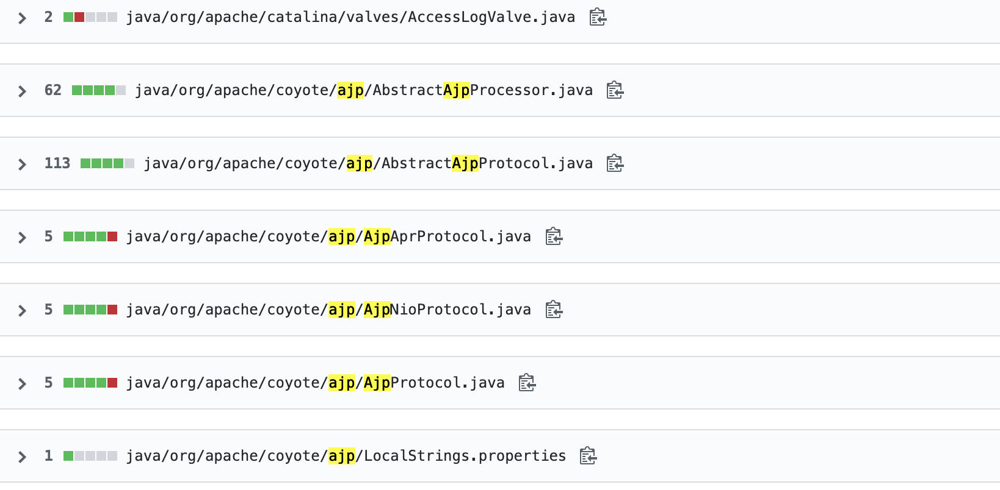
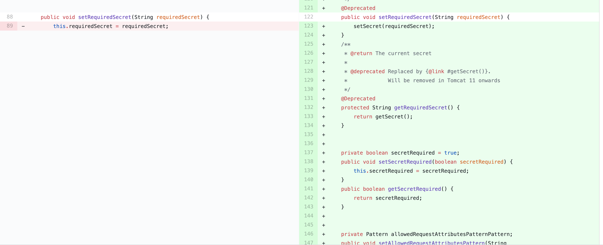
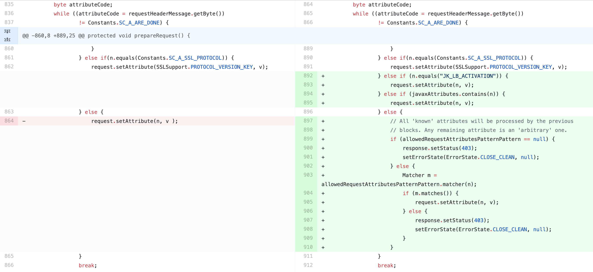

1 2 3 4 5 6 _ _ __ _ _ /_ \ (_ )_ __ / _ \ |__ ___ ___ | |_ ___ _ __ //_ \\ | | '_ \ \ \| '_ \ / _ \ / _ \| __ / _ \ '__ | / _ \| | |_ ) | _ \ \ | | | (_ ) | (_ ) | || __ / | \_ / \_ // | .__ / \__ /_ | |_ |\___/ \___/ \__ \___|_ | |__ /|_ |
背景介绍
2月20日，国家信息安全漏洞共享平台（CNVD）发布了一则关于Apache Tomcat存在文件包含漏洞的安全公告（CNVD-2020-10487 ，对应CVE-2020-1938）。漏洞影响范围覆盖了tomcat 6、7、8、9的全版本（Apache官方已发布9.0.31、8.5.51及7.0.100版本对此漏洞进行修复），外网虽然不常见，用来内网拓展是一个很不错的漏洞。
目前各种exp已经满天飞了，这里记录一下通过对比源代码定位漏洞的过程，有错误的地方还请大牛指正。
环境准备
这里以tomcat 7.0.99 版本代码为例作为分析环境。
漏洞分析过程
diff源代码
这里使用github的源代码对比功能进行分析。
通过ajp关键字可以发现ajp相关的源代码修改集中在“org.apache.coyote.ajp”包里

通过近一步阅读这个包下边改动的源代码可以发现主要改动集中在两方面
添加了认证相关的代码
文件 java/org/apache/coyote/ajp/AbstractAjpProcessor.java

对Attribute的设置进行了限制
文件 java/org/apache/coyote/ajp/AbstractAjpProcessor.java

这里就可以了大概猜测认证相关代码是为了防止类似事件发生，限制attribute是针对性解决本地漏洞。下一步进行动态debug分析具体的是如何读文件和文件包含的。
动态debug
这个时候断点的选择尤为重要，由于是第一次调试tomcat源代码，这里选择了两个断点
index.jsp文件内
org.apache.coyote.Request.getAttributes、org.apache.coyote.Request.getAttribute，
第一个断点是为了捋清楚tomcat处理正常jsp文件的整个流程。
第二个断点来源与上一步的代码比对结果。上一步代码比对将问题定位在了request.setAttribute前后(request变量为org.apache.coyote.Request对象)，所以这个断点设在了Request对象attribute的获取上，以此判断恶意设置的属性是在什么状态下使用了哪些具体的值如何具体的影响了执行流程。
通过调试发现静态资源会交由“org.apache.catalina.servlets.DefaultServlet”类处理，动态脚本会交由“org.apache.jasper.servlet.JspServlet”类处理。
在类“org.apache.catalina.servlets.DefaultServlet”中tomcat在“getRelativePath()”这个函数对设置的属性进行取值，以下是具体逻辑。
1 2 3 4 5 6 7 8 9 10 11 12 13 14 15 16 17 18 19 20 21 22 23 24 25 26 27 28 29 30 protected String getRelativePath(HttpServletRequest request , boolean allowEmptyPath) { String servletPath; String pathInfo; if (request .getAttribute(RequestDispatcher.INCLUDE_REQUEST_URI) != null ) { pathInfo = (String ) request .getAttribute(RequestDispatcher.INCLUDE_PATH_INFO); servletPath = (String ) request .getAttribute(RequestDispatcher.INCLUDE_SERVLET_PATH); } else { pathInfo = request .getPathInfo(); servletPath = request .getServletPath(); } StringBuilder result = new StringBuilder(); if (servletPath.length() > 0 ) { result.append(servletPath); } if (pathInfo != null ) { result.append(pathInfo); } if (result.length() == 0 && !allowEmptyPath) { result.append( } return result.toString(); } /* INCLUDE_REQUEST_URI = "javax.servlet.include.request_uri" INCLUDE_PATH_INFO = "javax.servlet.include.path_info" INCLUDE_SERVLET_PATH = "javax.servlet.include.servlet_path" */
根据代码可以看出我们可以控制以上属性来控制“getRelativePath()”的返回值，下一步tomcat会使用返回值读取资源返回给用户，此时我们可以构造恶意的属性控制返回值为我们想读取的内容的路径达到读文件的目的。
在类“org.apache.jasper.servlet.JspServlet”类中tomcat在“service()”这个函数对设置的属性进行取值，以下是具体逻辑。
1 2 3 4 5 6 7 8 9 10 11 12 13 14 15 16 17 18 19 20 21 22 23 24 25 26 27 28 29 30 31 32 33 34 35 36 37 38 39 40 41 42 @SuppressWarnings("deprecation" ) @Override public void service (HttpServletRequest request, HttpServletResponse response) throws ServletException, IOException { String jspUri = jspFile; if (jspUri == null ) { String jspFile = (String ) request.getAttribute(Constants.JSP_FILE); if (jspFile != null ) { jspUri = jspFile; request.removeAttribute(Constants.JSP_FILE); } } if (jspUri == null ) { jspUri = (String ) request.getAttribute( RequestDispatcher.INCLUDE_SERVLET_PATH); if (jspUri != null ) { String pathInfo = (String ) request.getAttribute( RequestDispatcher.INCLUDE_PATH_INFO); if (pathInfo != null ) { jspUri += pathInfo; } } else { jspUri = request.getServletPath(); String pathInfo = request.getPathInfo(); if (pathInfo != null ) { jspUri += pathInfo; } } } ... ... try { boolean precompile = preCompile(request); serviceJspFile(request, response, jspUri, precompile); ... ...
根据代码可以看出我们可以通过构造恶意属性控制变量jspUri的值，下一步tomcat就对变量jspUri对应的文件进行了编译执行然后返回执行结果，至此可以达到文件执行的目的。
整个逻辑是tomcat根据url中的文件名判断了对应处理的servlet，之后又通过request的相关属性二次获取要处理的文件路径，前后不匹配导致可以构造恶意属性改变tomcat处理的目标文件达到文件读取、文件执行的目的。
Enter-Hacking
文件读取
文件执行